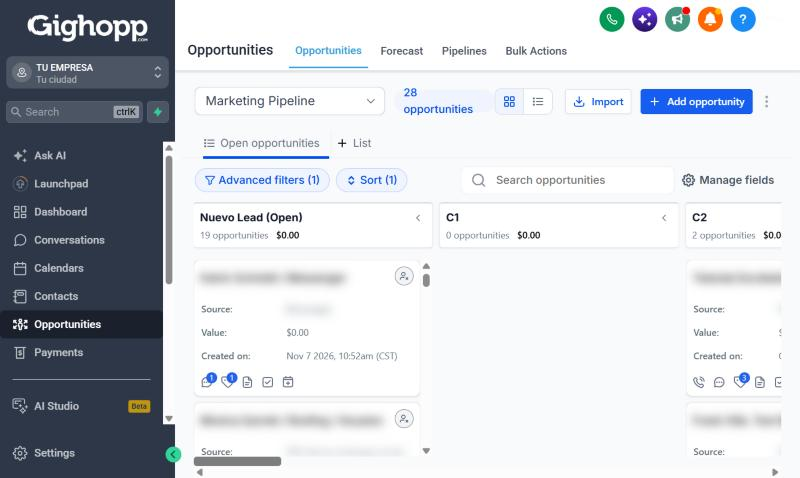
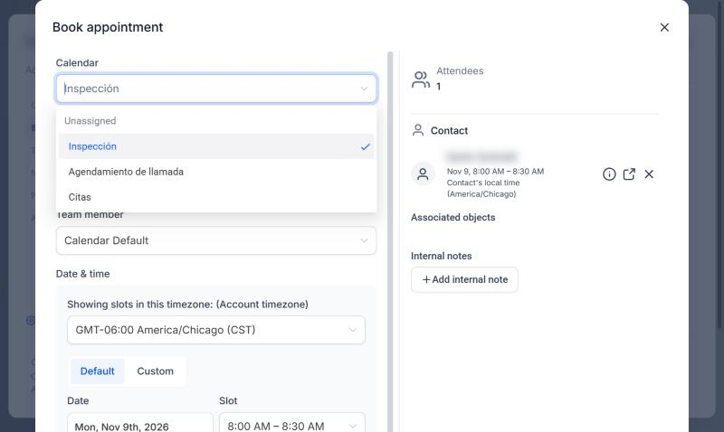
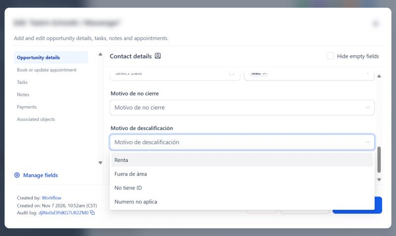

1
Abre la ficha del cliente
Entra a Opportunities. Ahí ves todos tus leads organizados por etapas. Haz clic en la tarjeta del cliente para abrir su ficha.

Cada vez que mueves un cliente en tu CRM, le enseñas a Facebook a quién buscar. Aquí te explico los dos movimientos que más importan.
Entra a Opportunities. Ahí ves todos tus leads organizados por etapas. Haz clic en la tarjeta del cliente para abrir su ficha.



Lo más seguro es que la tuya se llame Abandonado. Muévelo ahí. Y si tienes dudas, escríbele a Luis y lo revisan juntos.